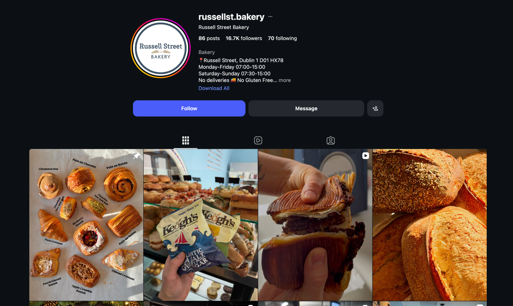
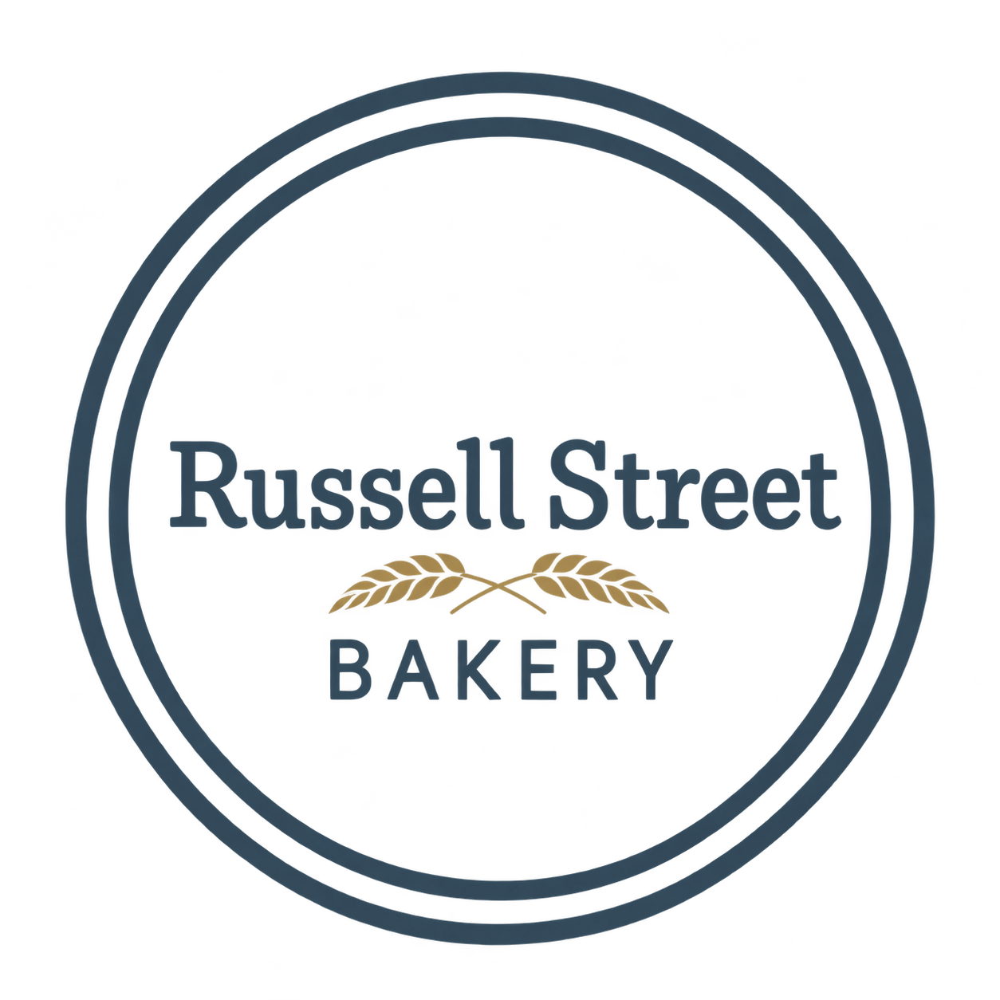
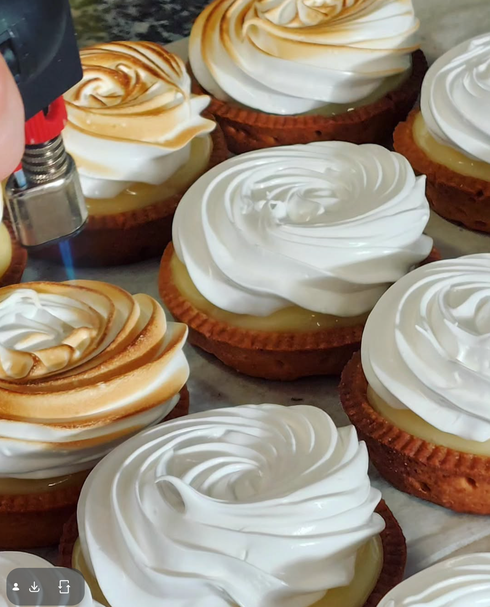
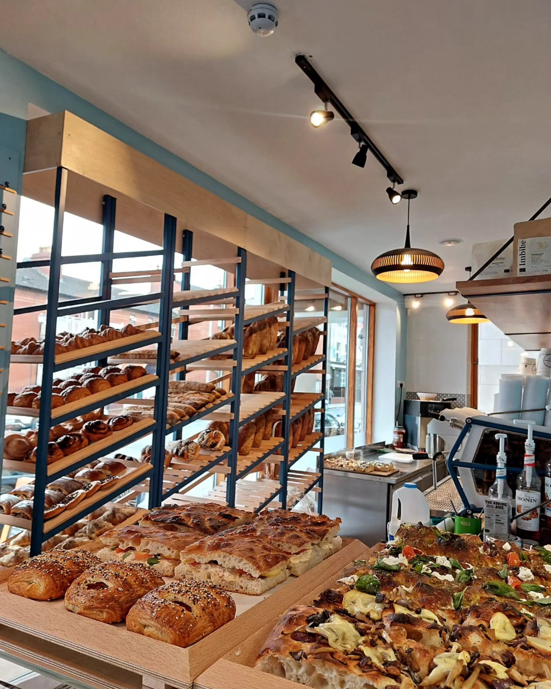
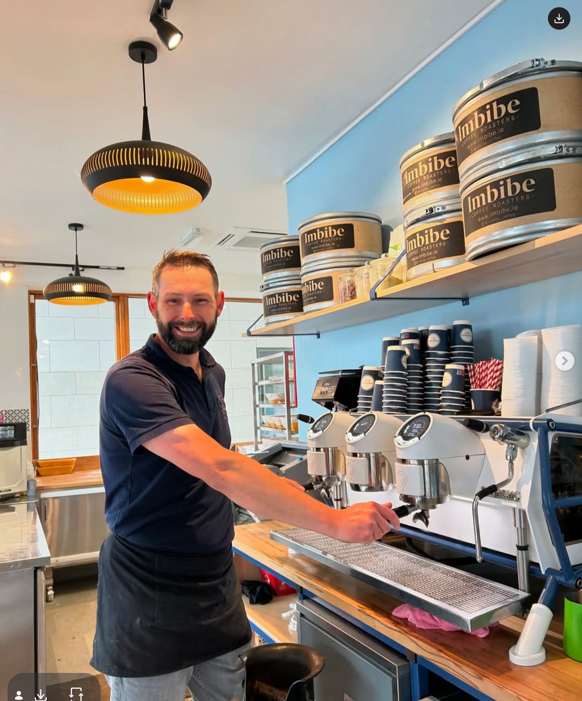
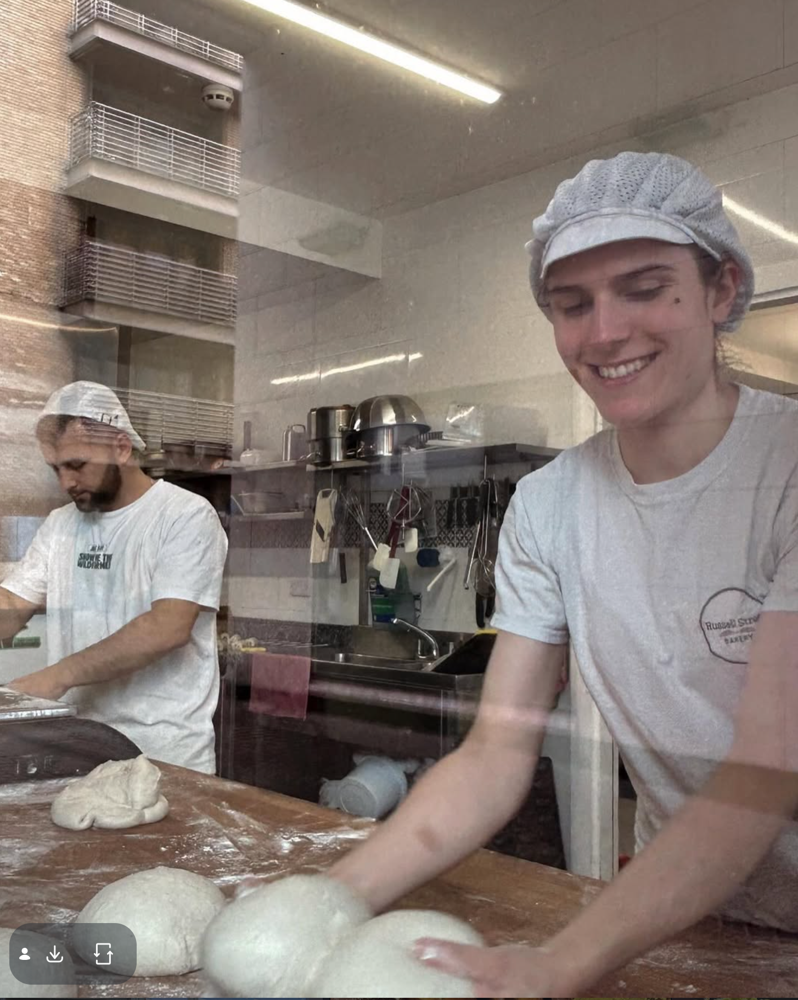
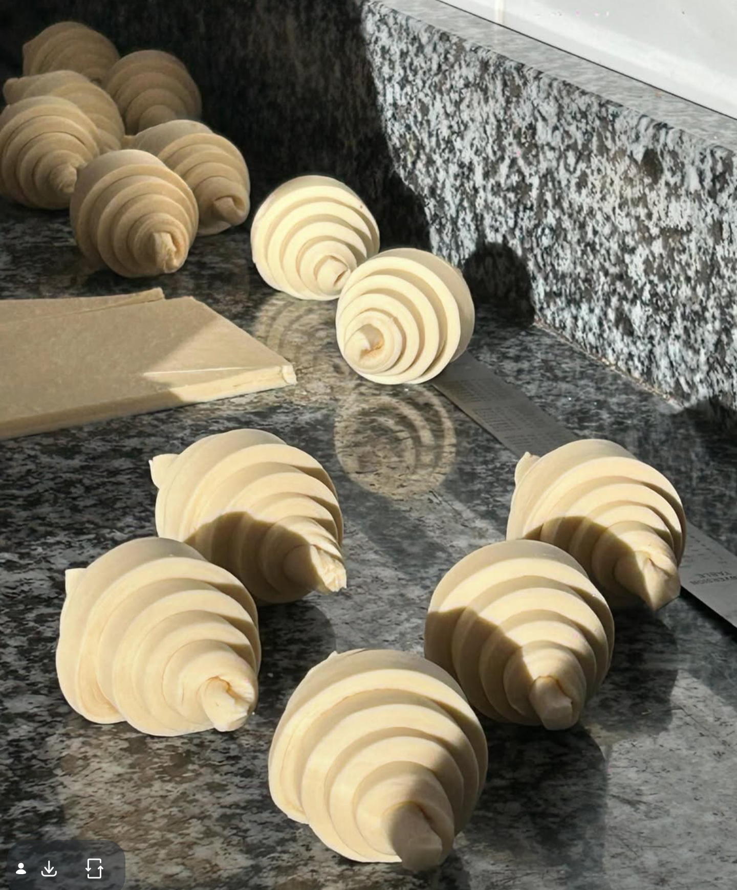
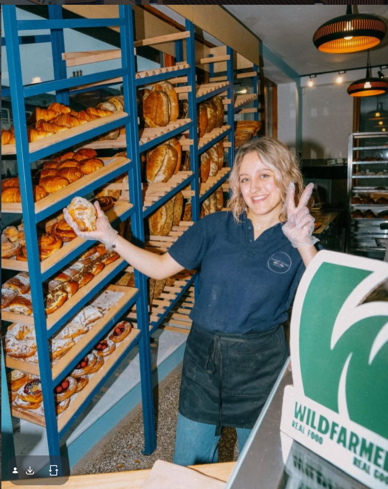
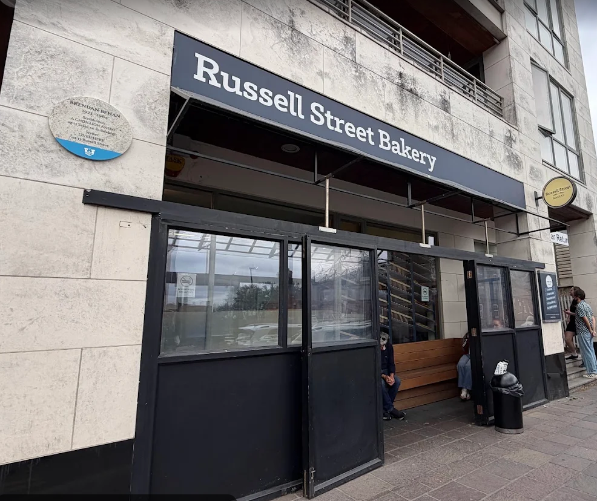

PASTRIES
The morning classics.
Croissants, pain au chocolat and pastries worth slowing down for.

RUSSELL STREET · DUBLIN 1
A little flour. A little patience.
A very good reason to get up.
A changing selection, throughout the day.
From a crisp morning croissant to a loaf for the table. Discover the bakery’s bread, pastries, sweet things and savoury favourites.
5 selections shown.

PASTRIES
Croissants, pain au chocolat and pastries worth slowing down for.
BREAD
Sourdough, baguettes and brioche. Ask about the day’s bread.

SWEET THINGS
Pastries and pâtisserie, with a selection that changes with the counter.

SAVOURY
Focaccia and sandwiches for the part of the day between sweet things.

IMBIBE COFFEE
A proper coffee to take with your favourite bake.
02 / THE QUIET WORK

French baking is a balance of technique and attention. From the dough on the bench to the last crisp layer, the pleasure is in the details.

Founded by Thibault Peigne, the baker behind Tartine Organic Bakery, Russell Street Bakery opened beside Croke Park in 2023.
Here, the craft is close to the counter: bread, pastries and coffee, ready to become part of your Dublin morning.
Make a morning of it ↗
IN GOOD COMPANY
Discover Russell Street Bakery in
All the Food ↗ and Visit Dublin ↗.
04 / COME BY
Bread for later. A pastry for now.
Find us on Russell Street, Dublin 1.

Unit 2, Behan Square
Russell Street, Dublin 1
D01 HX78, Ireland
Takeaway bakery. No indoor tables or deliveries.
Check the bakery’s Instagram for holiday updates.